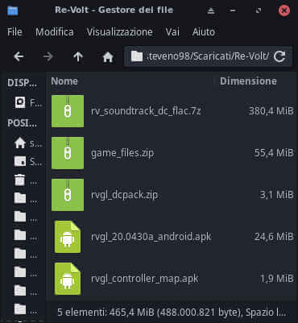

E' la prima volta che scrivo un articolo su uno dei miei giochi d'infanzia. Re-Volt è un Racing Game atipico, dove si ha a che fare con dei veicoli radiocomandati, che percorrono in delle piste che sono riproduzioni di vari ambienti della vita reale (e non) a grandezza naturale, che, dal punto di vista delle automobiline, appaiono giganteschi, il che conferisce alle piste un aspetto insolito (ecco il perchè l'ho definito atipico).
RVGL è un progetto portato avanti dalla comunità dove presenta il gioco Re-Volt riscritto completamente per garantire un completo supporto nativo su Windows (da 7 fino a 10), GNU/Linux e Android (da 2.x in poi). Essendo Open-Source, chiunque può mettere le mani sul codice sorgente ed espanderlo con nuovi veicoli, nuove piste e nuove funzionalità che non erano presenti nel gioco originale.
In questo articolo, sarà dedicato nell'installazione di Re-Volt nei dispositivi Android e la cosa bella è che può girare nelle versioni Android obsolete (tranne 1.x). Quindi, se vuoi giocarlo su un Tablet scrauso o su uno Smartphone più vecchio delle tue scarpe, puoi farlo! Ed è possibile giocarlo in modalità verticale ed orizzontale! Non richiede alcun permesso di Root e non si rischia di rompere il dispositivo. Cominciamo!
Ed aggiungiamo i colori per rendere il disegno più bello! Se non vuoi giocare in modalità silenziosa (dove si sentono solo gli effetti sonori), puoi includere la Soundtrack (sarebbe la colonna sonora del gioco). C'è ne sono di due tipi, quella con sonoro di qualità media (sui 100 MB) e quella di qualità alta (sui 400 MB).
Puoi arricchire ancora di più aggiungendo i contenuti aggiuntivi usciti originariamente nella versione Dreamcast, che includono la pista Rooftops e 14 veicoli radiocomandati.
Se non vuoi giocare con il Touch Screen e vuoi optare per il Controller Wireless, quest'app ti permette di mappare i comandi per far funzionare correttamente il tuo Controller con Re-Volt.
Nel caso tu hai già un File Manager su Android, salta il passaggio! Altrimenti, scaricalo! Lo capirai successivamente il perchè ti dovrà servire.
- Installazione -
( 1 ) Crea una cartella chiamata Re-Volt e metti in quella cartella tutti i file che avevi scaricato in precedenza, come puoi vedere in questa immagine:

( 2 ) Se hai scaricato i file su un dispositivo Android, salta il passaggio, altrimenti, da Android attiva il Debug USB dalle Opzioni Sviluppatore, per poi collegare lo Smartphone al PC (se hai scaricato i file da lì) tramite il cavetto USB. Fatto questo, dalla barra di stato (che si trova in alto), scorri verso in basso per aprire la tendina e premi su Trasferimento file tramite USB attivato e seleziona Trasferimento di file. Una volta fatto ciò, nel File Manager apparirà il dispositivo che avete collegato e premete lì, per poi entrare nella cartella dove dice Memoria interna ed infine copiare / incollare la cartella Re-Volt.
( 3 ) Dal File Manager su Android e dalla cartella Re-Volt, premi rvgl_20.0430a_android.apk (20.0430a indica la versione del gioco) e, nel caso ti apparirà l'avviso che stai per installare un'app che non proviene dal Google Play Store, non vi preoccupare! Non contiene alcun malware. Per poterla installare, dovrai attivare la possibilità di installare le app dalle sorgenti sconosciute su Android.
( 4 ) Una volta installato il gioco, se vuoi giocare con un Controller Wireless, premi rvgl_controller_map.apk. Una volta installato, apri e se ti esce l'avviso che dice "Configure controller 0: Android Accelerometer"? premi Yes e, dal tuo Controller, configura ogni tasto e levetta che l'app ti evidenzia in verde. Una volta finito, la configurazione sarà completata e l'app si chiuderà da sola. Ti consiglio di non disinstallare quell'app.
( 5 ) Se vuoi giocare con la Soundtrack e i contenuti aggiuntivi della versione Dreamcast, dalla cartella Re-Volt, estrai soundtrack.zip (oppure rv_soundtrack_dc_flac.7z) e rvgl_dcpack.zip. Successivamente, sposta tutto quel che hai estratto dalla cartella Re-Volt alla cartella RVGL (si trova nella memoria interna). Se ti chiede di sovrascrivere i file, conferma la richiesta!
( 6 ) Dalla schermata home di Android, premi su RVGL (indicata con l'icona del fulmine) e se il gioco funziona completamente, allora hai eseguito correttamente tutta la procedura! Buon divertimento!
- Conclusione -
In caso di problemi e/o se ti interessa fare una partita con me (e con altri), fammi sapere in privato! Ci vediamo in un prossimo articolo, a tutta birra! ^^